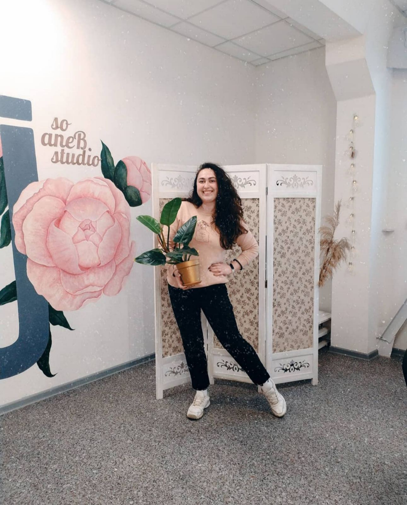
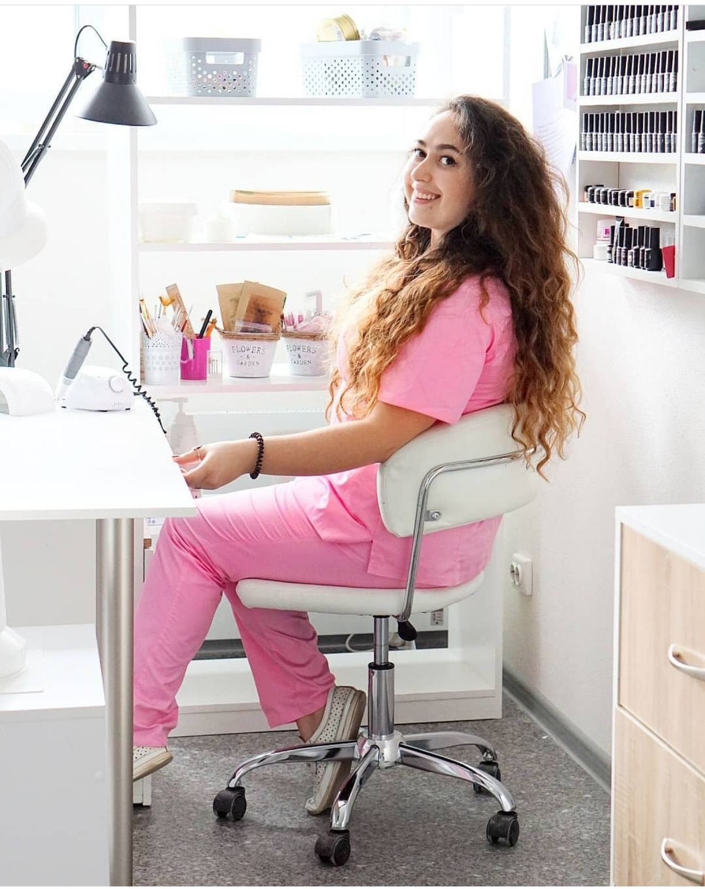

Инструкция для Cleaning Lady.
Игра "Швабра-тряпка-пылесос" на 2 часа.
В этой инструкции ниже приведена подробная информация по выполнению уборки в маникюрной студии So Jane. Дополнительную общую информацию по наведению порядка в маникюрных салонах можно найти здесь> уборка маникюрного салона
Хозяйка студии Евгения очень доброжелательна, приветлива, но щепетильна и требовательна к чистоте.
Фото Евгении
В студии много поверхностей, мебели, этажерок, полочек, статуєток, вазочек, свечей, цветов.
Ещё есть кофезона и зона стерилизации инструментов.
Работу желательно проводить в перчатках
и маске (лучше в 2-х). График работы будет скользящий, в зависимости от записи клиентов.
Его будет сообщать Евгения в вашей личной переписки в Телеграмм канале. Основные требования
к работнику это аккуратность, внимательность, ответственность, чёткое следование инструкции,
пунктуальность, добросовестность, честность, соблюдение правил безопасности при работе с техникой
(пылесос, кофемашина, стерилизаторы, выключатели) и дезрастворами.
Фото фрагмента студии
Вход в общее офисное здание через проходную с вахтёром. Доступ в здание разрешён с 6:00 до 21:30.
Дежурному вахтёру (всего их посменно трое,) следует назвать номер студии -201. Она находится
на
2-м этаже, лестница будет справа от проходной, а студия сразу слева от леснцицы. Туалет расположен
чуть дальше по коридору от студии слева на противоположной стороне.
Весь объём работы расчитан приблизительно на 1,5-2,5 часа, в зависимости от степени загрязнения помещения, личной скорости работника, наличия перерывов.
Перечень функциональных обязанностей Cleaning Lady:
- Подготовка зоны для стерилизации.
- приготовление 2,5% раствора дезинфектора
- замена растворов, маркировка, просушка контейнеров
- Удаление пыли со всех поверхностей.
- чистка зеркал
- протирка мебели, поддоконника, двери и декора
- Чистка кофемашины.
- чистка контейнера для кофейного жмыха
- чистка поддона
- Чистка 2-х вытяжек.
- вынимание фильтров из вытяжек
- чистка фильтров пылесосом
- установка фильтров в вытяжки
- Уход за растениям.
- полив
- удаление сухих листьев
- протирка листьев
- Уборка пола.
- пылесос+влажная уборка
- чистка коврика у двери
- Чистка пылесоса.
- удаление пыли из и с пылесоса
- промывание контейнера водой
- просушка контейнера
- Вынос мусора.
- сбор мусора из 3-х вёдер
- вынос мусора в контейнер на улице
- Проверка перед уходом помещения и выключателей.
- сложить инвентарь в пенал
- выключить свет и тумблеры на удлинителях
- !!!выключить 3 тумблера возле двери!!!
- закрыть двери ключём на 2 оборота